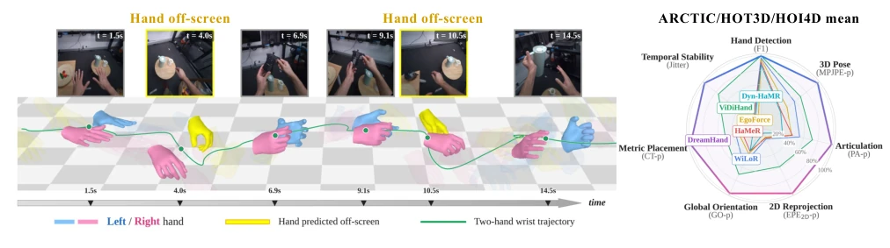
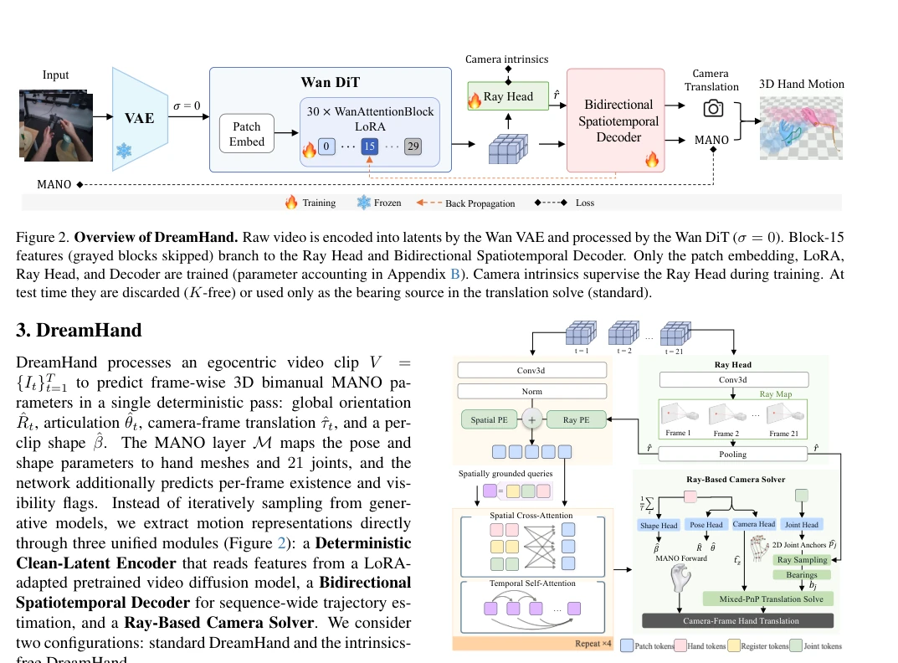
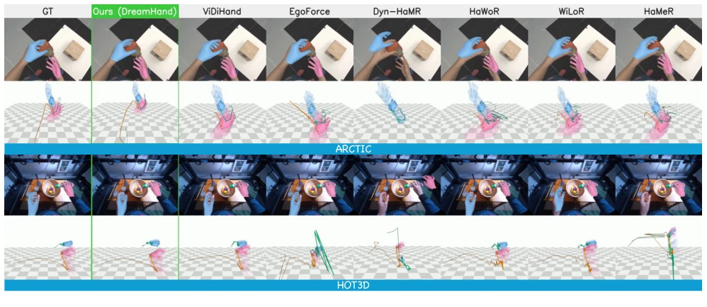

DreamHand 这招“借尸还魂”玩得挺溜，把视频扩散模型从“生成器”强行扭转为“编码器”，省去了耗时的多步采样，直接单前向传播搞定。在遮挡和手出框的极端场景下，它确实把 SOTA 按在地上摩擦，MPJPE 砍掉 30%-40%，速度还快了 33 倍，简直是给 Embodied AI 的“脏活累活”装了个涡轮增压。不过，别高兴太早，这模型是个“离线党”，必须等整个视频 clip 跑完才能推理，想搞实时闭环控制？还得再蒸馏。另外，它虽然号称“无内参”，但本质上是靠训练数据里的相机几何规律“猜”出来的，换个新相机家族可能就得重新训练，泛化性这点还是得打个问号。总的来说，是个在特定赛道上极其强悍的“离线特化型”选手，但离通用实时感知还有距离。
DreamHand skillfully employs the strategy of "borrowing a corpse to return the soul", forcibly transforming the video diffusion model from a "generator" into an "encoder", eliminating time-consuming multi-step sampling and completing the task directly via a single forward pass. In extreme scenarios involving occlusion and hands out of frame, it significantly outperforms the SOTA, reducing MPJPE by 30%-40% and increasing speed by 33 times, essentially installing a turbocharger for the "tedious and laborious tasks" of Embodied AI. However, do not get too excited; this model is an "offline-only" approach, requiring the entire video clip to finish before inference. Want real-time closed-loop control? Distillation is still needed. Additionally, although it claims "no intrinsics", it essentially "infers" based on camera geometric patterns in the training data; switching to a new camera family may require retraining, so generalization remains questionable. Overall, it is an extremely powerful "offline-specialized" player in a specific track, but still far from general real-time perception.
研究动机Motivation
自监督视频是具身智能获取操作数据的金矿，但从中恢复带度量的 3D 手运动轨迹却难如登天。核心痛点在于两点：一是频繁的人 - 物交互（HOI）遮挡，二是头部快速运动导致手完全离开视野（Out-of-Sight, OOS）。现有方法大多依赖单帧检测器 [5, 20, 22-24] 或 SLAM 跟踪 [35, 38, 39, 41]，一旦手消失，因果跟踪器就断了历史上下文，重新出现时往往无法连贯恢复。虽然近期有工作利用视频扩散模型（VDM）生成几何叠加层 [36]，但它们依赖耗时的多步采样渲染像素，不仅延迟高，还容易将生成伪影传播到姿态估计中。此外，直接在相机帧回归坐标会混淆手部 articulation 和相机自运动，且严重依赖标定。我们需要一种能利用物理先验、无需外部检测器、且能处理长时间遮挡和出框的离线推理框架。
Self-supervised video is a goldmine for embodied intelligence to acquire manipulation data, but recovering metric 3D hand motion trajectories from it is extremely challenging. The core pain points lie in two aspects: first, frequent human-object interaction (HOI) occlusion; second, rapid head motion causing the hand to completely leave the field of view (Out-of-Sight, OOS). Existing methods mostly rely on single-frame detectors [5, 20, 22-24] or SLAM tracking [35, 38, 39, 41]; once the hand disappears, the causal tracker breaks the historical context and often fails to recover coherently upon reappearing. Although recent work utilizes video diffusion models (VDM) to generate geometric overlays [36], they rely on time-consuming multi-step sampling to render pixels, resulting in high latency and prone to propagating generation artifacts into pose estimation. Furthermore, directly regressing coordinates on camera frames confounds hand articulation and camera ego-motion, and relies heavily on calibration. We require an offline inference framework that can utilize physical priors, requires no external detectors, and can handle long-term occlusion and out-of-frame scenarios.

Figure 1. Occlusion-robust egocentric 3D hand motion recovery. Left: DreamHand applied to a raw RGB video clip. DreamHand maintains hand identity and trajectory continuity even when a hand temporarily leaves the field of view (frames shaded yellow). Right: DreamHand leads on six of the seven metrics shown (F1, MPJPE-p, PA-p, EPE2D-p, GO-p, CT-p, and Jitter, each averaged over ARCTIC, HOT3D, and HOI4D, with farther from the center being better) and matches the strongest baseline on detection F1.
DreamHand proposes an offline clip-level framework, with the core idea of transforming a pre-trained video diffusion model (VDM) into a "Deterministic Clean-Latent Encoder." The overall flow is as follows: First, the input raw video is encoded by VAE into a clean latent vector z, and under zero noise (σ=0), a single forward pass is performed through a truncated DiT network (only the first 15 layers) to extract a dense spatiotemporal feature grid. Next, the features are input into a "Bidirectional Spatiotemporal Decoder," which utilizes Spatially Grounded Queries and a bidirectional attention mechanism to aggregate long-range context of the entire clip, thereby interpolating and recovering reasonable hand pose during occlusion or out-of-frame periods. Meanwhile, a "Ray-Based Camera Solver" is introduced to predict a continuous FOV ray field from the diffusion latent, combined with a mixed PnP solver to solve hand metric translation without requiring test-time camera intrinsics. During training, the encoder is fine-tuned via LoRA to endow features with geometric awareness, and pose, shape, ray field, and smoothness losses are optimized end-to-end.

Figure 3. Architecture of the Bidirectional Spatiotemporal De- coder. The predicted ray field ˆr enters as a ray PE added to the spatial PE. Four layers alternate Spatial Cross-Attention with Tem- poral Self-Attention. The readout heads emit MANO parameters and feed the mixed-PnP translation solve. Our two configurations differ architecturally only in the bearing source, sampled from ˆr (K-free, shown) or computed from camera intrinsics (standard).

Figure 4. Qualitative comparison on ARCTIC (top) and HOT3D (bottom). For each dataset: the predicted mesh on the input frame, and the recovered hands in a shared world frame with wrist trails. Every method predicts in the camera frame, and the world view places those predictions with the ground-truth camera poses, so the view shows placement, not recovered camera motion. Under bimanual occlusion on ARCTIC several baselines recover only one hand. On wide-angle HOT3D they scatter the hands across the floor plane.
Comprehensive evaluation was conducted on five benchmarks including ARCTIC, HOT3D, HOI4D, etc. Compared to the strongest baselines such as ViDiHand, DreamHand reduces MPJPE-p by 30% on ARCTIC, reduces by 40% on HOT3D, and improves by up to 61% on metrics including out-of-frame hands (MPJPE+OOS). Ablation experiments confirm that utilizing the VDM generative prior (rather than an ordinary discriminative encoder) is crucial for recovering out-of-frame hands, and LoRA fine-tuning also significantly improves accuracy. Additionally, its "no intrinsics" (K-free) version sees only a slight performance drop without camera calibration, proving the effectiveness of ray field prediction. In terms of speed, the single forward pass enables it to reach 63.1 fps, 33 times faster than sampling-dependent baselines.